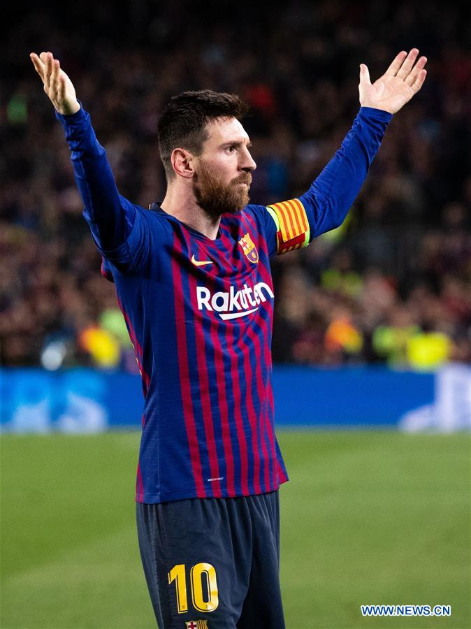
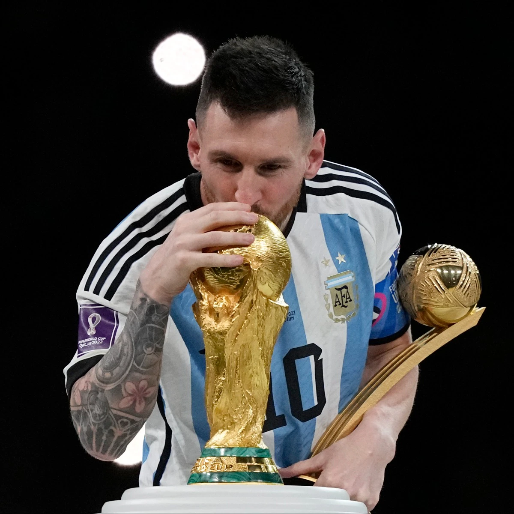
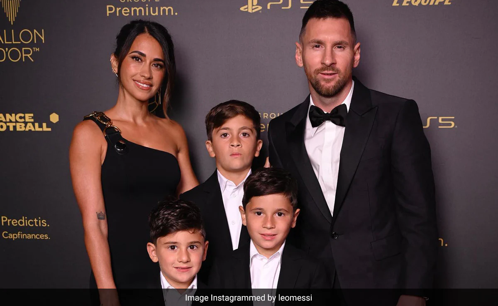

Лионель Месси - один из самых известных футболистов в истории, звезда мирового футбола и икона для миллионов поклонников. Родился 24 июня 1987 года в Росарио, Аргентина, Месси начал свою карьеру в футболе в детстве и с тех пор стал легендой.
Лионель Месси начал свою профессиональную карьеру в футбольном клубе "Барселона" в 2004 году. С тех пор он выиграл множество наград, включая 7 Золотых мячей, которые присуждаются лучшему футболисту мира. Он также является рекордсменом "Барселоны" по числу забитых голов.
Лионель Месси имеет впечатляющий список достижений, включая множество титулов Ла Лиги, Лиги чемпионов УЕФА и кубков страны. Он также является капитаном национальной сборной Аргентины и принимал участие в нескольких чемпионатах мира и Кубках Америки.
Вне поля Лионель Месси также активен. Он женат на Антонелле Рокуццо, с которой у него трое детей. Месси также известен своей благотворительной деятельностью и участием в различных благотворительных проектах.
Следите за последними новостями о Лионеле Месси в социальных сетях: